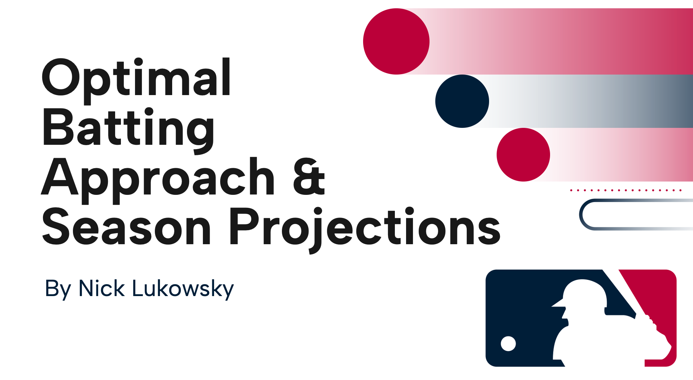
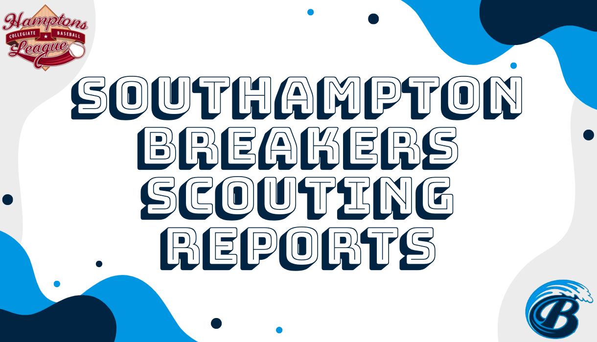
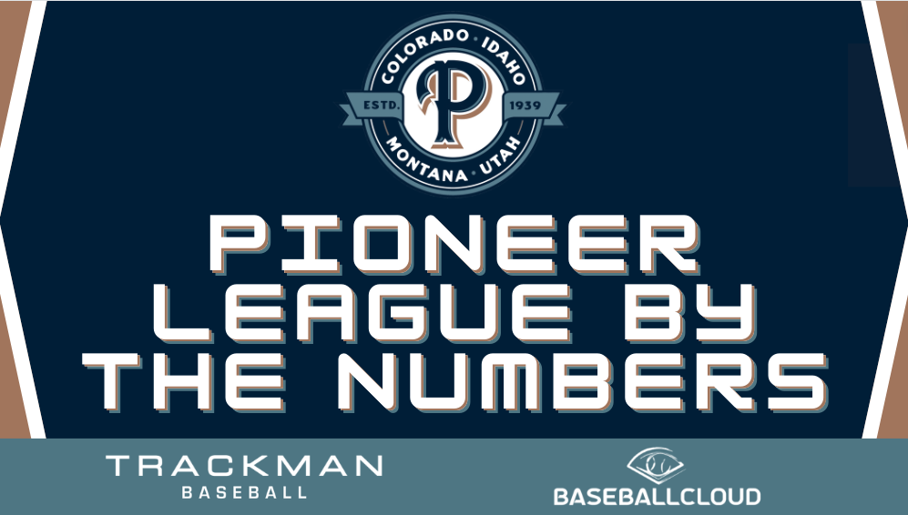
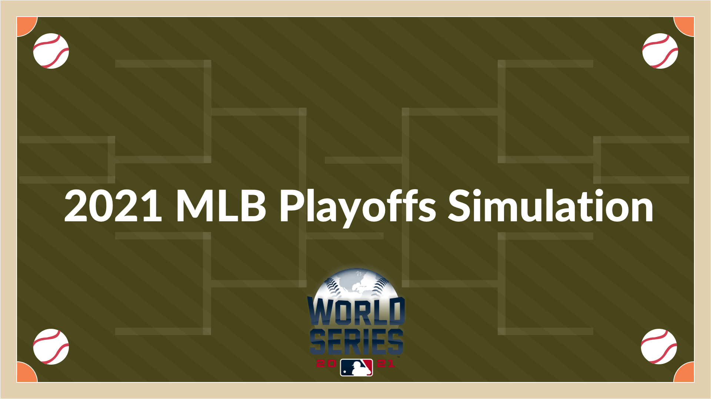

Ongoing Project
Ongoing Project
As a personal project I'm tracking NCAA basketball games daily, comparing KenPom FanMatch data with betting lines. Games results are recorded where KenPom's model suggests significant expected value, and the goal is to analyze discrepancies between the predictive model and betting markets to uncover insights for betting strategies or sportsbook adjustments.
 December 18th, 2024
December 18th, 2024
For the 2024 college football season, I created a full simulation predicting game outcomes using Sagarin ratings and historical betting data. A Monte Carlo simulation determined game outcomes, conference championship matchups, and the 12-team College Football Playoff field using a custom resume score metric. The result was a comprehensive season forecast, identifying top contenders and national championship probabilities throughout different points in the season
May 15th, 2023
For my senior thesis in the Sport Analytics program, I made a draft comparisons Shiny application for the 2023 NBA Draft prospects. Going away from traditional college to NBA comparisons, player-tracking data was used and top comparisons were derived using kernel density estimation and the Kullback-Liebler divergence.

April 22nd, 2024
Researched how MLB hitters age over their careers and how they can use Statcast metrics to adjust their approach towards ideal values. Used polynomial regression to find optimal values for metrics related to a hitter's approach. Created a model to make season predictions for players taking into account their age and recent seasons.

July 22nd, 2023
For my internship with the Hamptons Collegiate Baseball League I worked for the Southampton Breakers creating reports on their pitchers. Implementing data collected on-site by other interns, I used R and Photoshop to make clear, comprehensible scouting reports for the Breakers coaching staff.

July 18th, 2023
As a part of my internship with the Pioneer Baseball League I wrote an article highlighting players and teams by their performance in some advanced metrics through the 1st half of the season. Data was available through the PBL's partnership with TrackMan and BaseballCloud, which allowed for advanced ball-tracking data and pitch-by-pitch events to be captured through TrackMan cameras and displayed online in the format of BaseballCloud dashboards.

September 20th, 2021
With two weeks until the 2021 MLB Playoffs begin, I made playoff predictions based on team ELO ratings. A simulation was created for the rest of the regular season and playoffs and was ran 100,000 times to calculate probabilties of making and advancing throughout the playoffs.